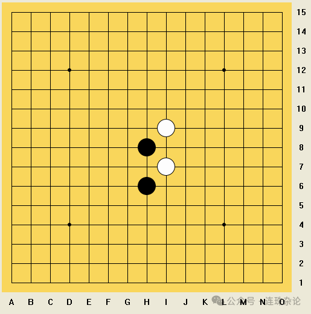
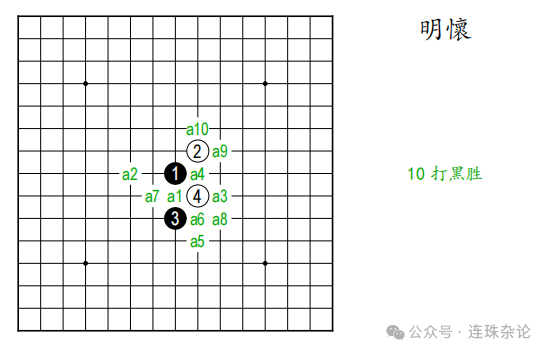
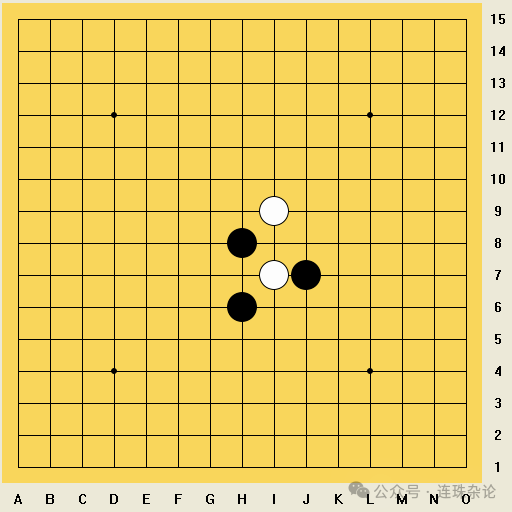
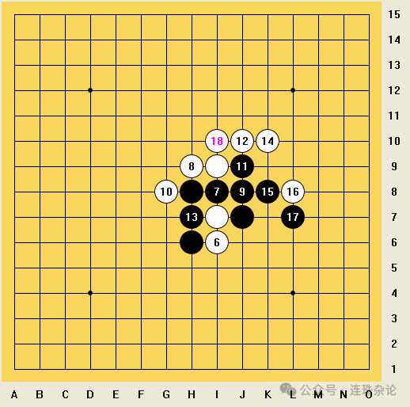
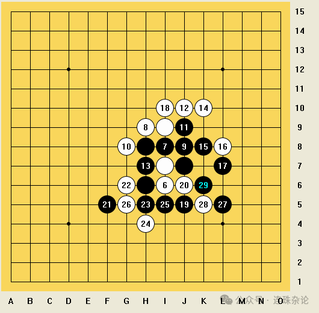
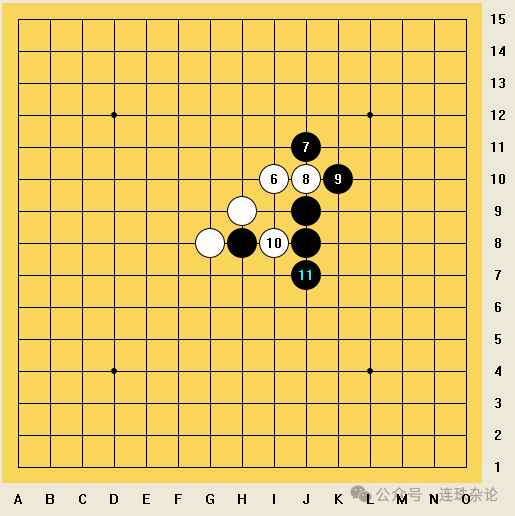
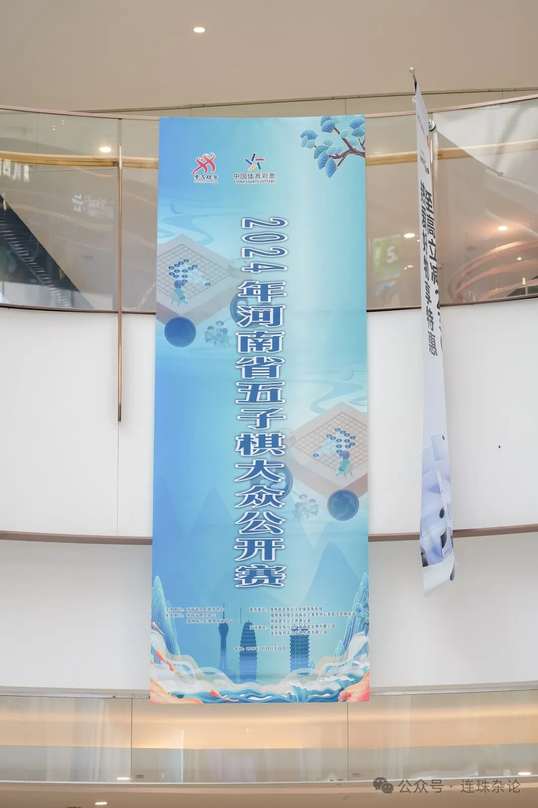

赛后记｜2024河南省五子棋公开赛棋评②
没有意外的胜利
上期说到了第四轮的对局，这期我们放松些，铺垫些，评点轻松的。下一期再上高一点的强度。就说说本次比赛的最后两轮吧。我面对中档的级位棋手，自然是毫无悬念地赢了下来。
第六轮
黑：潘冠臣
白：刘天祥
交换：+--++
结果：黑胜
赛前我没能查到对手的任何信息，根据过往轮次的成绩，我大致推测对手的水平在4到6级左右。对方开局下黑1，我交换后对方白2选择斜止开局，我黑3下明星局，不怕对手通经典瑞星二打。对方白4选择了一个较为常见的选点，竖线跳活二，与黑的跳活二遥相呼应。我知道这个开局是十打必胜的开局，但是我的视角不好，打点需要现场再重新计算下，耗时不小，而且我知道后边的打点想必胜并不容易。倘若两打开局，直接通浦月第二打或者直接连活三即可胜利。走浦明流通形5的必胜我认为是最轻松的，白怎么走都束手无策，黑容易必胜。而在塔十开局下，可选择的就多。通流星第二打也是可以下的，但是白优势很大。因为对手大概是没有初段及以上实力的，我也没必要给十个打点。再加上第五轮的消耗太大，中间休息较少，不适合再下长局，所以我直接选择了交换，毕竟此局面接近生死局，对手给什么我都可以再考量一下。


结果对方黑5给了我个容易必胜的点。对手把黑5下在了白4旁边，三颗黑棋形成了一个“小三角”。我简略计算后知道白棋没有什么有效线路可以抓到三三禁手，于是直接交换过来执黑。

对方白6果然跳活三，我黑7堵中间后盘面出现了一个三三禁手。此时对方应该也看到了这个三三禁手没法抓，于是直接白8直接堵住了黑的三三禁手点。现在我盘面上的唯一一个活二就可以一直进攻到取胜了，我便启动活二，黑9活三。对方白10堵住左边的同时形成双活二，我黑11继续向上进攻。对方白12堵上，此时我业已看到了许多必胜的线路。接下来我黑13活三，对方白14堵上，一条两手过后的短VCF业已显现。于是我黑15冲四，白16堵后我黑17活三，对手愣了一下，紧接着白18堵住了我的活三同时自己形成双活三，接下来我执行了VCF胜，对方恍然大悟原来已经败了。


第七轮
黑：乔仕鑫
白：潘冠臣
交换：+-+++
结果：白胜
乔仕鑫是一位专业5级的棋手，参与过多个河南省内的比赛，是河南省的青年五子棋棋手，比赛经验非常丰富，在所有七轮制的比赛中均能取得3至4分，具有一定实力。但其对陌生开局应对较差，我决定走金星第三打的一些骗招考考他。
前十手是正常手顺，第十一手对方堵错了活二的方向，送我简明必胜，第十二手及以后我的下法很快速杀对方，后续不再赘述，各位读者也可自行推演下后续的必胜手段。

————————————————————
这次比赛之后，世青杯中遭遇“见习者”全盘狗一狗二的阴霾总算纾解开来。我不需要被一位六人全国赛里获倒数第一的“政策二段”碰瓷，被强迫下指导棋，而是能和一群志同道合的棋友交流棋艺，没有戾气，只有愉悦，胜亦欣然，败也晓然，这就是实战的魅力。
或许我再也没有机会和那位“政策二段”张梓溢线下交锋了——因为他连家门口的广州赛都怯战了。我这河南赛夺冠当天，他因羞愧而删了我。这不禁让我想到了山东网赛的张栩森，两年前赢下“宇宙之神”后，就销声匿迹了。有些人只能把自己的遮羞布挂在尾巴上当旗摇，他们的世界里永远没有友善，只有无尽的私心杂念。我们不能因被他们所干扰，而背离自己的初心。
下期继续，期期更为精彩，敬请期待！
如梦的迷雾随着诗篇消失在远山。人们高举着手臂期待着信仰的回归和肾上腺素的激荡。
